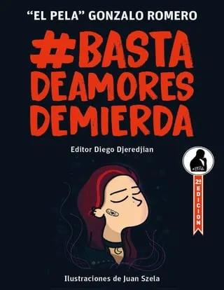

La serie televisiva de Harry Potter se estrena en 2026 con 7 temporadas confirmadas, basadas en la historia creada por J.K. Rowling. La expectativa reside en que pueda capturar la esencia de la saga literaria y conservar el espíritu de innovación que ha caracterizado a la obra de Rowling.
El 15 de noviembre, el escritor Gonzalo El Pela Romero brindará una charla sobre su libro que contiene reflexiones sobre el amor y las “relaciones tóxicas”. “Basta de Amores de Mierda” es el nombre del libro de Gonzalo El Pela Romero, un conocido escritor y músico, que lo presentará en la provincia de Salta el lunes 15 de noviembre desde las 21 en el Teatro Provincial.
Cursor AI es el nuevo ChatGPT de los desarrolladores: cuando programar es "tab-tab-tab" La nueva herramienta, basada en VSCode, hace que la programación sea más sencilla que nunca: basta con pedirle a la plataforma lo que necesitas